UN Book Fairs for Literacy 2004 - 2014
UN Book Fair for Literacy Fall 2014
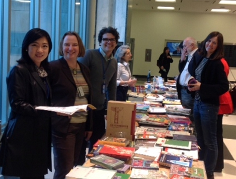
Yan Yue, Jodi Nooyen, Rodrigo Bergamasco Bottura, Marines Ecevarria,
Velimir Kovacevic, Sofia Gallego
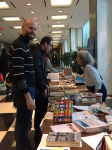
Marco Comandini, Marines Echevaria
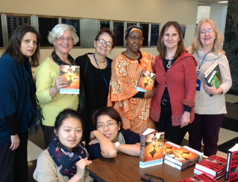
Dana Fox, Odile Kory, Pat Duffy, Kadiatou Sall-Beye, Mary Regan, Deborah Fairchild
Front: Aruna, Maya Zhang
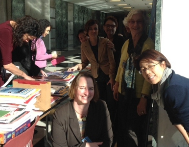
Jodi Nooyen, Cristina Perez Cordon, Pat Duffy,
Odile Kory, Maya Zhang
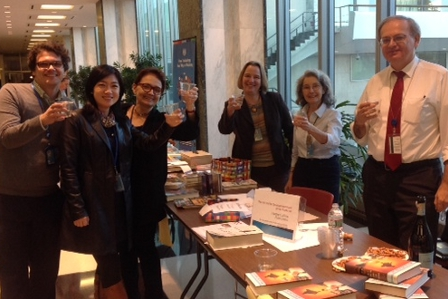
Rodrigo Bergamasco Bottura, Yan Yue, Pat Duffy, Jodi Nooyen,
Marines Echevarria, Guy Candusso
UN Book Fair for Literacy Summer 2014
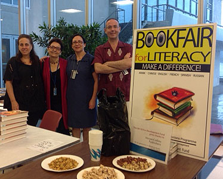
Lori Richards, Patricia Duffy, Thouria Benferhat,
Javier Zanon
.jpg) Dana Fox, Meredith Cannella, Pat Duffy,
Alla Padalka
Dana Fox, Meredith Cannella, Pat Duffy,
Alla Padalka
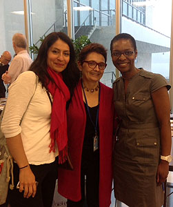
Pauline Lopez-Guzman, Pat Duffy, Lydia Sambwa-Kane
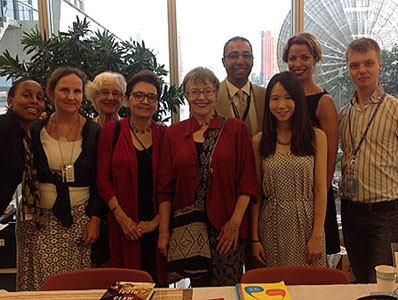
Dawn Jordan, Mary Regan, Odile Kory, Pat Duffy, Francoise Bouffault,
Nagy Nasr, Liming Zhong, Naima Charafi, Sergey Zalesov
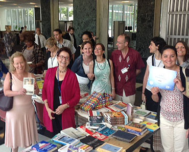
Alice Harrison, Pat Duffy, Mary Regan, Cristina Perez-Cordon,
Javier Zanon, Anna Sanvisens-Farras, Anna Ruducha,
Sonia Torres-Rubio
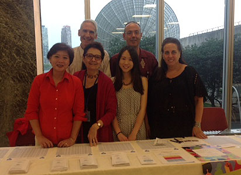
Catherina DaKay, Sandy Singer, Pat Duffy, Liming Zhong, Javier Zanon, Lori Richards
UN Book Fair for Literacy Fall 2013
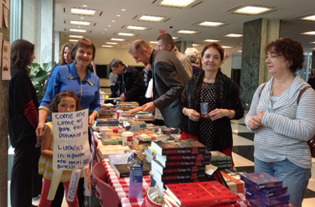
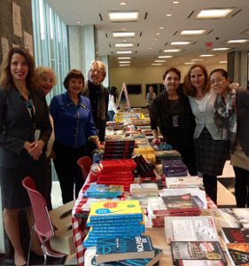
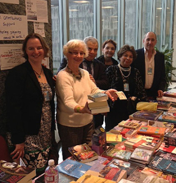
UN Book Fair for Literacy Fall 2012
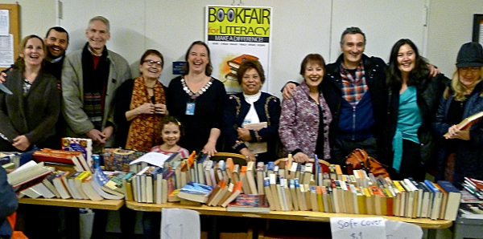
Book Fair volunteers (L to R: Mary Regan, Felipe Martin Sarachaga, Sandy Singer, Pat Duffy, Jodi
Nooyen,
Samia Montasser, Francoise Bouffault, Guillermo Simiani, Eva Garcia, Deborah Fairchild)
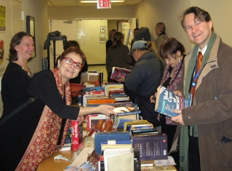
(L to R: Jodi Nooyen, Pat Duffy, Francoise Bouffault)
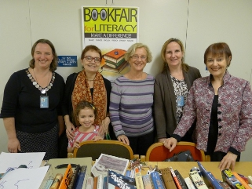
(L to R: Jodi Nooyen, Pat Duffy, Odile Kory, Mary Regan, Francoise Bouffault)
UN Book Fair for Literacy Fall 2011
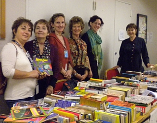
Book Fair volunteers (L to R: Dilek Honciagliu, Pat Duffy, Mary Regan, Raymonde Burke, Brianna
Avenia-Tapper,
Francoise Bouffault)
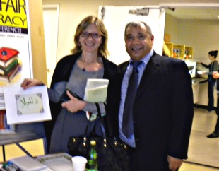
Ahmed Eissawi, Poet and Professor, with LCP student
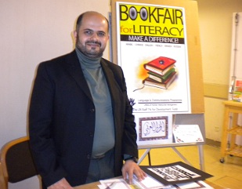
Majed Seif, Calligrapher and Professor
UN Book Fair for Literacy Fall 2010
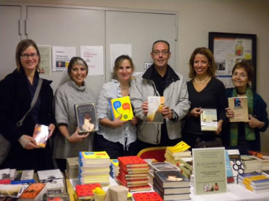
Book Fair volunteers (L to R: Kirsten Duckett, Jill Kalotay, Mary Regan,
Xavier Zanon, Naima Charafi and Pat Duffy)
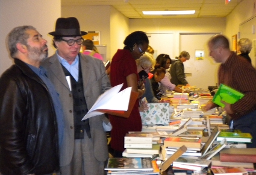
The Poets' Corner
UN Book Fair for Literacy Fall 2009
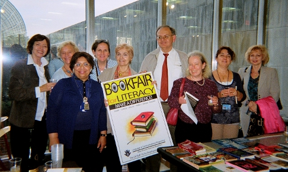
Book Fair volunteers
 Volunteers (L to R: Kirsten Duckett, Jill Kalotay, Mary Regan)
Volunteers (L to R: Kirsten Duckett, Jill Kalotay, Mary Regan)
UN Book Fair for Literacy Fall 2008
(books donated by UN staff, publishers Random House and
Henry Holt)
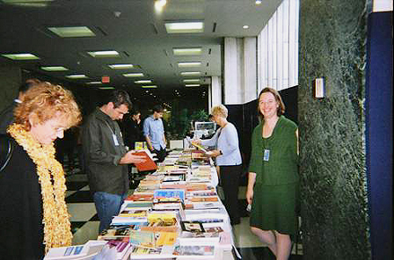
Book Fair for Literacy, UN lobby
(volunteers, L to R: Odile Kory, Jodi Nooyen)
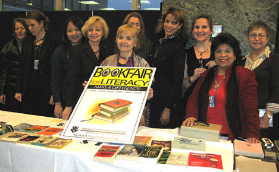
The Book Fair for Literacy poster
(L to R: Claire Lerognon, Fabienne Pairon, Seo Yoon Chang, Irina Kulichevsky,
Pat Duffy, Consuelo, Naima Charafi, Mary Regan, Samia Montasser, Alla Padalka
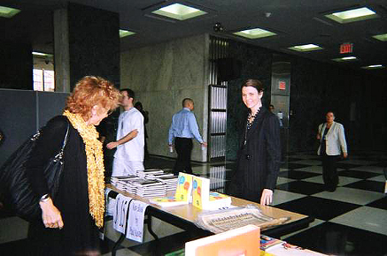
(L to R: Jodi Nooyen, Pat Duffy, Odile Kory, Mary Regan, Francoise Bouffault)
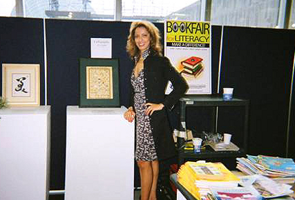
Team member, Naima Charafi,
(calligraphy by Zhang Jia-Xuan)
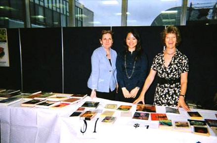
Event Volunteers (L to R: Mary Regan, Seo Yoon Chang, Raymonde Burke)
UN Book Fair for Literacy Fall 2007
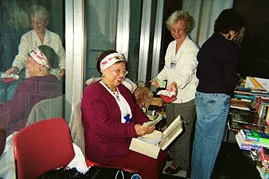
2007: Counting contributions
(L to R: Samia Montasser, Odile Kory, Francoise Bouffault)
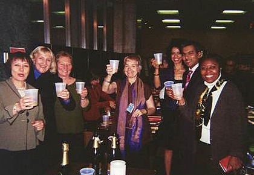
2007 Post Book Fair toast
(L to R: Francoise Bouffault, Irina Tarrasova, Katya Lutz, Pat Duffy, Naima Charafi,
Carlos Islam, J Swenson-Lewis)
UN Book Fair for Literacy Fall 2006
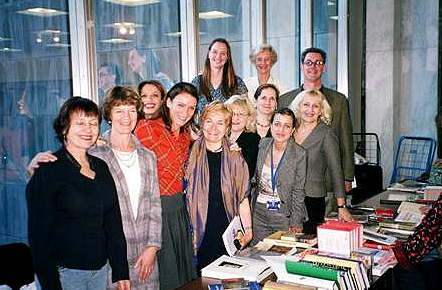
Book Fair table, UN lobby
(L to R to L: Francoise Bouffault, Raymonde Burke, Naima Charafi, Isabelle Balot, Pat Duffy,
Irina, Mary Regan, Cristina, Irina Tarrasova, Daniel Patrick Moran, Odile Kory,
Jodi Nooyen)
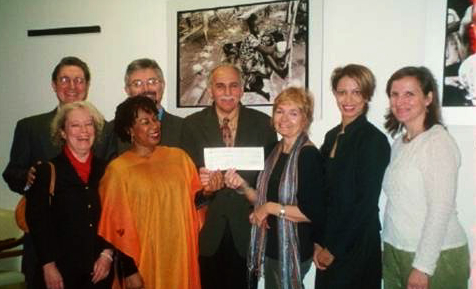
LCP Book Fair for Literacy Team present contribution to ‘UN Staff 1% for Development Fund’
UN Book Fair for Literacy Fall 2005
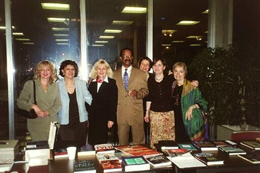
Book table, UN lobby
(L to R: Irina, Ana Costa, Irina, Gordon Tapper, Claire Lerognon, Mary Regan, Pat Duffy)
UN Book Fair for Literacy Fall 2004
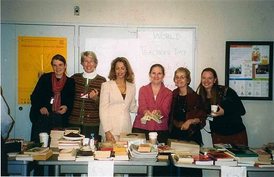
Book table, UN lobby
(L to R: Fabienne Pairon, Linda Haley, Naima Charifi, Mary Regan, Pat Duffy, JodiNooyen)
 End-of-Book Fair Celebration 2004
End-of-Book Fair Celebration 2004
Funds taken in for literacy projects have benefitted a village library in Uganda and girl’s school in
Haiti
Back to Page
Action through Words
Learning English, Learning About the United Nations